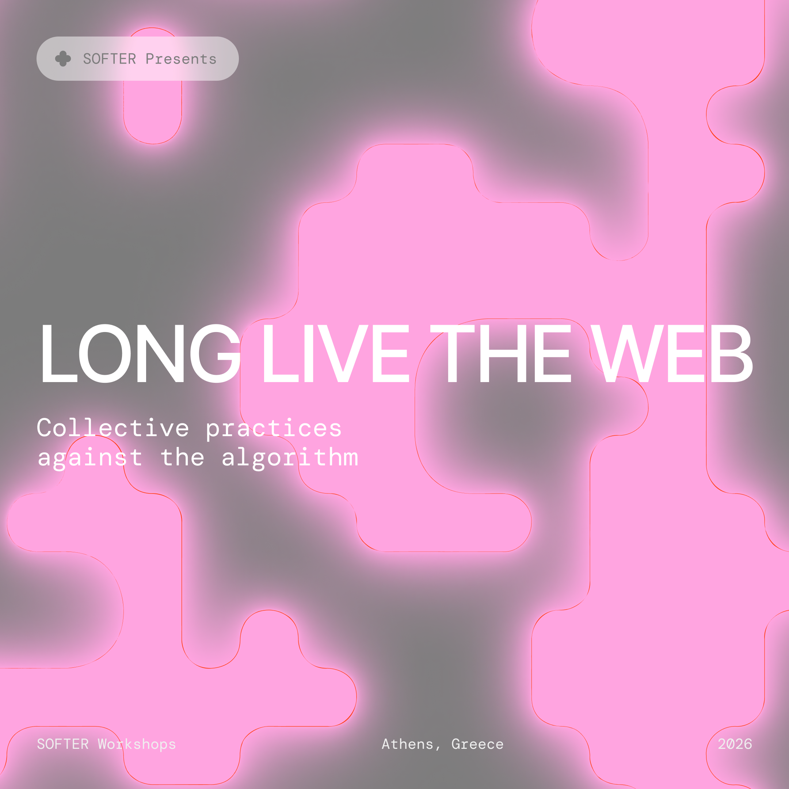

EN
Another Internet Manifesto — 19 April
Weaving Webs of Wonder: HTML Workshops — 25 & 26 April, continuing through July
Something is wrong with the internet and we all feel it. We gathered to name what we already felt, the dysphoria of navigating an internet that was sold back to us behind paywalls, stripped for data, and optimized into submission. The platforms we inhabit have become extraction machines; the interfaces, funnels; the connections, commodities.
GR
Κάτι δεν πάει καλά με το διαδίκτυο και το νιώθουμε όλα. Μαζευτήκαμε για να ονομάσουμε αυτό που ήδη νιώθαμε, τη δυσφορία του να πλοηγούμαστε σε ένα διαδίκτυο που μας πουλήθηκε πίσω από τείχη πληρωμής, επικεντρώθηκε για δεδομένα και βελτιστοποιήθηκε μέχρι την υποταγή. Οι πλατφόρμες που κατοικούμε έχουν γίνει μηχανές εξόρυξης, οι διεπαφές μηχανισμοί κατεύθυνσης, οι συνδέσεις εμπορεύματα.
Part 1: Another internet manifesto
It was a space to name that feeling together, honestly and without rush. Through playful exercises, we mapped the digital territories we inhabit, drafted the principles we refuse to live without online, and imagined what it means to truly embody the web rather than just consume it. We brought our love, our rage, and our hope.
Ήταν ένας χώρος να κατονομάσουμε αυτό το συναίσθημα μαζί, με ειλικρίνεια και χωρίς βιασύνη. Μέσα από παιχνίδια και άλλες δραστηριότητες, χαρτογραφήσαμε τα ψηφιακά εδάφη που κατοικούμε, συντάξαμε τις αρχές που αρνούμαστε να ζήσουμε χωρίς αυτές στο διαδίκτυο, και φανταστήκαμε τι σημαίνει να ενσαρκώνουμε τον ιστό αντί απλώς να τον καταναλώνουμε. Φέραμε την αγάπη μας, τον θυμό μας και την ελπίδα μας.
Part 2: Weaving webs of wonder: HTML workshops
Technology can be intimidating and self-learning can feel overwhelming. How can we take back our web and enjoy digital expression outside the walls of the Big Tech mall, without the control of the algorithm?
What began as a single weekend grew into a series of workshops that continued through July. We learned to self-learn HTML, shared resources and gentle guidance, and built simple webpages with HTML and CSS. Using the principles and ideas drafted in the manifesto as our raw material, we built web pages side by side. We broke things, fixed them, and discovered that making the internet is simpler and more radical than we thought.
Η τεχνολογία και η αυτοδιδασκαλία μπορεί να μοιάζουν τρομακτικές. Όμως πως μπορούμε να διεκδικήσουμε πίσω τον ιστό και την ψηφιακή μας έκφραση, έξω από τους τοίχους του Big Tech εμπορικού κέντρου;
Αυτό που ξεκίνησε ως ένα Σαββατοκύριακο εξελίχθηκε σε μια σειρά εργαστηρίων που συνεχίστηκαν μέχρι τον Ιούλιο. Μάθαμε τρόπους αυτοεκμάθησης HTML, μοιραστήκαμε πηγές και μια διακριτική καθοδήγηση για το πώς φτιάχνουμε απλές ιστοσελίδες χρησιμοποιώντας HTML και CSS. Επικαλώντας τις αρχές και τις ιδέες που συντάξαμε στο μανιφέστο ως πρώτη ύλη, φτιάξαμε ιστοσελίδες, το ένα δίπλα στο άλλο. “Σπάσαμε” πράγματα, τα επισκευάσαμε, και ανακαλύψαμε ότι το να φτιάχνεις το internet είναι πιο απλό και ριζοσπαστικό από ό,τι φαίνεται.